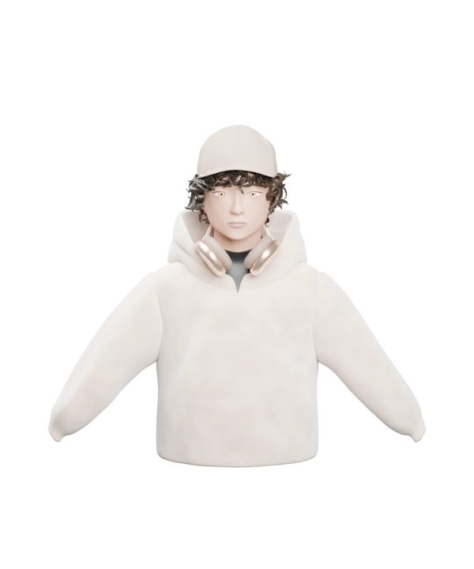

Early beginnings
Making things by hand
Origami & paper crafts
- Folding and selling paper crafts as a kid.
- The same hands-on, iterate-until-it-feels-right instinct still guides my work.
Loading your world…

Loading Khubaib…
I'm Khubaib — a 3D artist based in New York, working with clients everywhere. I spend my days around modeling, materials, lighting, and imagined worlds. I like making things, testing ideas, and following the details until an image feels right.